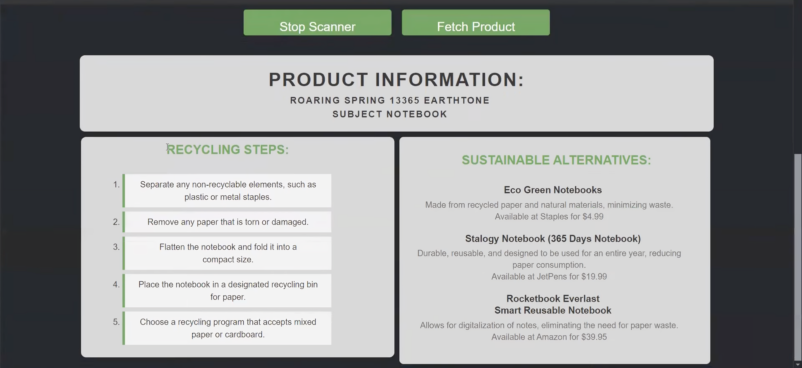

Krish Kumar
Software Engineer
Experience
Software Engineer Intern
@ AppleMar 2025 — Sep 2025
- Resolved critical issues in system daemons and drivers across iOS/macOS/tvOS.
- Expanded unit test coverage to detect malformed inputs early.
- Improved security and reliability of core networking infrastructure.
Cybersecurity Intern
@ Lawrence Livermore National LabJun 2024 — Sep 2024
- Built a neural network (93% accuracy) to predict cyberattack impact on Texas’s power grid.
- Improved grid resilience by 20%, protecting 30M+ residents.
ML Researcher
@ UCLA Smart Grid Energy Research CenterSep 2023 — Present
- Designing an actor-critic RL model to optimize EV charging with voltage regulation.
- Incorporating dynamic pricing into real-time scheduling.
Software Engineer Intern
@ RokuJun 2023 — Jul 2023
- Created a dynamic Roku TV app using BrightScript and SceneGraph for interactive STEM learning.
- Reached 150+ underrepresented students through an intuitive, engaging UI experience.
Featured Projects

PantryPal - AI Recipe Recommender
Suggests recipes based on available ingredients using OpenAI. Includes step by step instructions and nutrition facts.

UniRide - University Carpool Platform
Built full-stack carpooling platform enabling students to create and join rides with real-time messaging.

EcoSphere - AI for Sustainable Living
Built for LAHacks 2024, EcoSphere helps users build eco-friendly habits with personalized AI-powered tools. Features include a recycling assistant, carbon footprint tracker, and emissions visualizer.